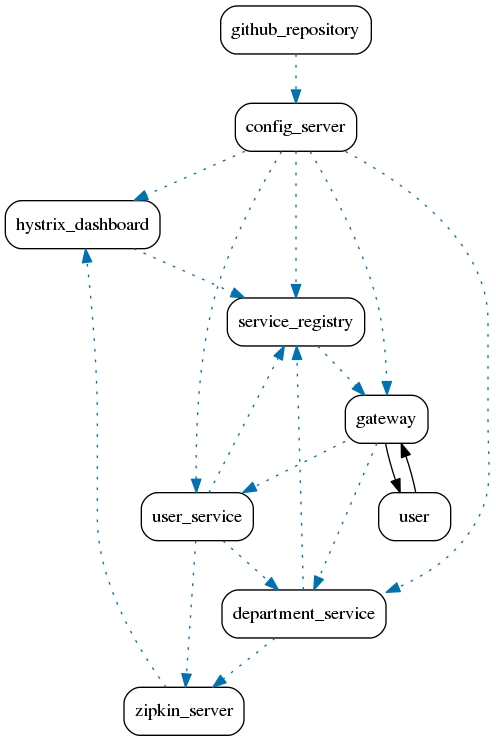

Non-conformance visualization for shabbirdwd53_springboot-microservice

Overview of interpretations generated for shabbirdwd53_springboot-microservice
Dynamic non-conformance between user-service and service-registry:
Click here to view the interpretation for the dynamic non-conformance between user-service and service-registry
Dynamic non-conformance between department-service and zipkin-server:
Click here to view the interpretation for the dynamic non-conformance between department-service and zipkin-server
Dynamic non-conformance between config-server and department-service:
Click here to view the interpretation for the dynamic non-conformance between config-server and department-service
Dynamic non-conformance between user-service and department-service:
Click here to view the interpretation for the dynamic non-conformance between user-service and department-service
Dynamic non-conformance between zipkin-server and hystrix-dashboard:
Click here to view the interpretation for the dynamic non-conformance between zipkin-server and hystrix-dashboard
Dynamic non-conformance between config-server and service-registry:
Click here to view the interpretation for the dynamic non-conformance between config-server and service-registry
Dynamic non-conformance between department-service and service-registry:
Click here to view the interpretation for the dynamic non-conformance between department-service and service-registry
Dynamic non-conformance between hystrix-dashboard and service-registry:
Click here to view the interpretation for the dynamic non-conformance between hystrix-dashboard and service-registry
Dynamic non-conformance between github-repository and config-server:
Click here to view the interpretation for the dynamic non-conformance between github-repository and config-server
Dynamic non-conformance between service-registry and gateway:
Click here to view the interpretation for the dynamic non-conformance between service-registry and gateway
Dynamic non-conformance between gateway and user-service:
Click here to view the interpretation for the dynamic non-conformance between gateway and user-service
Dynamic non-conformance between gateway and department-service:
Click here to view the interpretation for the dynamic non-conformance between gateway and department-service
Dynamic non-conformance between config-server and hystrix-dashboard:
Click here to view the interpretation for the dynamic non-conformance between config-server and hystrix-dashboard
Dynamic non-conformance between config-server and gateway:
Click here to view the interpretation for the dynamic non-conformance between config-server and gateway
Dynamic non-conformance between config-server and user-service:
Click here to view the interpretation for the dynamic non-conformance between config-server and user-service
Dynamic non-conformance between user-service and zipkin-server:
Click here to view the interpretation for the dynamic non-conformance between user-service and zipkin-server